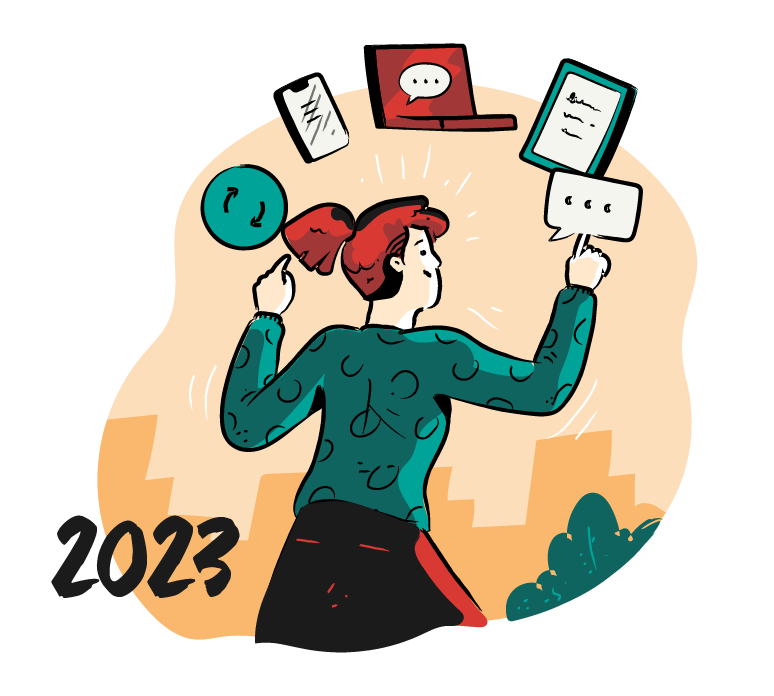
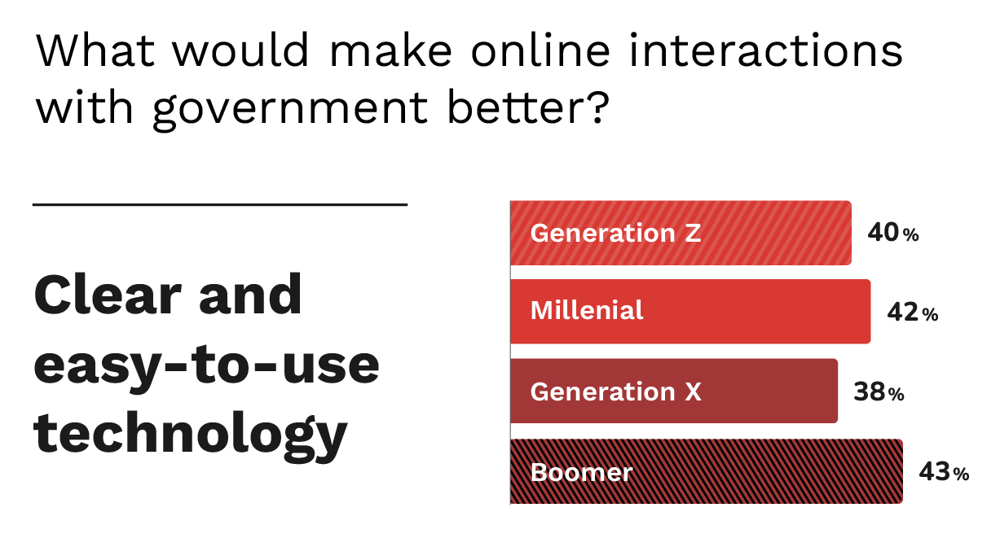
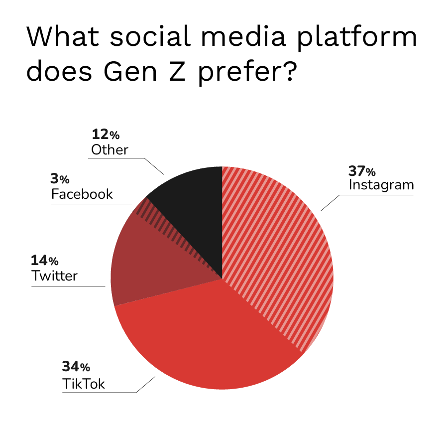
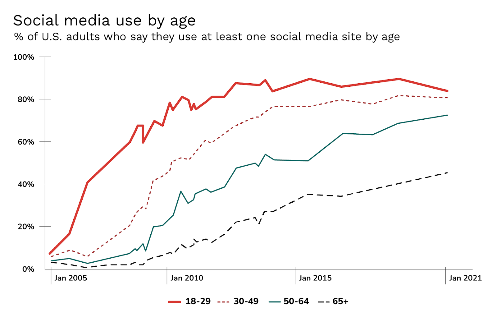

It is 2023 and we think that Gen Z, those born between 1996–2012, will drive this year’s civic tech trends.
“What we see is that Gen Z has always been able to look at a screen and engage with their world,” noted Jason Dorsey, president, The Center for Generational Kinetics (CGK). “And that’s true in every aspect of their lives: banking, dating, education, news, you name it. All Gen Z is doing is bringing what they believe is normal to every environment.”⁴
Gen Z wants to engage more with government and tends to be more altruistic than other generations.⁷ Shaping your digital roadmaps with their needs and goals in mind would not only help engage the younger generations, but it benefits all generations.
Multi-device usage, omnichannel support, and accessible approaches are not only becoming more integrated by the day, but they meet people where they are. These tactics are some of the ways we’re going to create long term engagement and interest in government channels for 2023.
1. (Still) prioritize human-centered design

In GovTech.com’s eBook, How Local Governments Can Reach Gen Z to Boomers, members of each generation were asked, “what would make online interactions with government better?” Clear, easy-to-use technology ranked the highest among all generations.
A combination of rapid innovation and its resulting design debt may be taking a toll on the constituent experience, and they’re noticing.
An example of Gen Z-inspired human-centered design that benefits other generations, specifically Boomers, is our work on Medicare.gov.
We designed discovery work that got to the heart of the needs of the people using the Medicare site. We gathered data through UX, Accessibility, and Technical audits. We also reviewed survey results and analytics data to understand pain points and behaviors.
Once high-level outcomes were pulled together, we created problem states and conducted a workshop with the client where we sketched wireframes together. Those wireframes are approved and we’ve moved on to high-fidelity mock ups.
Throughout the process, we identified minor bugs that we could address immediately and are working toward both user and A/B testing in the future.
2. Create a cohesive, multi-channel experience
61% of Gen Z and 57% of Millennials trust social media more than their local government.⁵ So how can civic tech best capitalize on generations gravitating towards a variety of channels? By creating cohesive, trustworthy, multi-channel experiences.

Heather Dretsch, Assistant Professor of Marketing at NC State University found that Gen Z is becoming particularly savvy at navigating platforms and staying on top of the algorithms so each channel is a better use of their time. In her research, she found that 37% of Gen Z users prefer Instagram, 34% prefer TikTok, 14% prefer Twitter, 3% prefer Facebook, and 12% prefer other social media platforms (primarily LinkedIn and Snapchat).⁸
Real-time communication over a variety of digital channels better serves younger generations because Gen Z believes they can better themselves through the content they consume.⁸ It is how they stay updated about their world and things going on that are relevant to them.
By creating content on a wider range of channels, it also increases the likelihood that other generations’ engagement with government information because you’d be meeting them where they are as well. As of 2021, at least 45% of all generations were using some form of social media and those numbers are on the rise with all generations, with a slight decrease for Gen Z.⁹

And multi-channel experiences don’t have to stop at just websites and social media. Push notifications and SMS messaging can also be extremely effective. They can spread emergency news, targeted by location, which is extremely beneficial when people need to take action.
Push notifications and SMS messaging is important from an accessibility perspective as well. Emergency sirens and phone calls may be less effective for those living with hearing loss.
3. Enable self-service
More than ever, constituents want to address concerns on their own, using online articles, chatbots, and virtual agents.³ Some may prefer the convenience of self-service, other may not have the time or place to make calls or be on hold.
In many instances, people may default to a communication channel that best works for them, regardless of their generation. This typically includes non-native English speakers, people living with certain disabilities, and people who lack access to a reliable, high-speed internet connection.
A few solutions could be real time messaging, a chatbot powered by artificial intelligence (AI), or email.
Real-time messaging
Real-time messaging platforms are a great opportunity to offer personal, human support. This is a great opportunity to cross generational preferences. Messaging allows younger generations to connect in a way that is easiest and more convenient for them. Talking to a real person makes older generations more comfortable.
Messaging platforms are also great for data collection.¹ People reach out when things aren’t clear, or they’re having trouble completing their task.
With this data, we’re able to identify people’s goals, needs, and pain points. We learn the questions they ask and what they’re trying to do. We can then create solutions to make it easier for people to find the information they need or complete their task without having to reach out to anyone.
AI Chatbots
In GovTech.com’s recent Digital States Survey: Doing IT Right, 76% of states now use a chatbot. And while chatbots are nothing new, whether people are receiving the information they came for is unclear.
Tracking metrics for chatbots can be subjective. Typical chatbot platform metrics include: activity volume, conversation length, and bounce rate.⁶ This data can be skewed by people getting the information they need on the site on their own (causing low activity) or the bot producing accurate and fast results (causing high bounce rates), for example.
The preferred service channel to get questions answered or resolve issues is email across three generations. This excludes Boomers’ unique desire to pick up the phone and talk with someone. Even Gen Z, who rely mainly on social media for information, prefer email over social channels 31% to 7% to get an issue resolved.⁴
4. Put an emphasis on privacy and security
Identity theft and data breaches have always existed. Yet, the rise in cyberattacks have people realizing how vulnerable their data is.² There may be an overarching concern that extends into civic tech space as well.
In GovTech.com’s recent survey, Digital States Survey: Doing IT Right, 14% of states say only 10% of their IT budget goes towards cybersecurity. Even when it is the number one IT priority of states for 2022.
5. Consider voice search tactics for SEO
Voice assistants answer short, informational queries such as “Who sings Bohemian Rhapsody?” and “What’s the weather in San Diego?” but they’ve also started to process more customized searches, like “Where is the nearest DMV?” and “Do they renew license plates there?”²
Agencies are responding by changing how they frame information. To answer reader’s questions based on intent, content writers are opting for more conversational formats. This way, when people use voice search, they’ll get high-quality, accurate responses more quickly.²
6. Experiment with content types
Civic tech isn’t usually on the forefront of experimenting with different content types. But that doesn’t mean that we need to ignore other formats.
People learn and consume information in different ways. In most cases, civic tech content is long-form text, which can not only be boring, but difficult to understand for many people.
Video-based content
Video-based content is ideal in a number of ways. It captures people who are visual or auditory learners, but when closed captioning is included (which it should be!), you can also capture people who learn and understand best by reading.
Gen Z prefers bite-sized videos to help create engagement and awareness.⁴ Videos should be short and to-the-point, include transcriptions and closed captioning, and allow for users to pause and replay content.
Interactive content
If you’ve used the internet within the past decade, you’ve likely come across interactive content without even realizing it. Gone are the days of static posts and passive consumption — today’s audience wants content that demands attention.
Dynamic, two-way experiences are being created that encourage active engagement from their constituents with content like:
- Interactive infographics
- Calculators
- Interactive maps
- Interactive videos²
81% of marketers agree this low-cost, high-impact content strategy is much more effective at grabbing people’s attention than static content.²
Getting Started
Gen Z is at the forefront of living with technology all day, every day. They’ve never known a life without it. Those of us who aren’t Gen Z have also learned to adopt technology in the ways that work for us.
By focusing your efforts on how Gen Z uses technology, you’re also reaching all the other generations who have adopted the channels and devices that are meaningful to them.
Sources
¹ https://ecommercefastlane.com/the-next-8-big-digital-marketing-trends-in-2023/
² https://asana.com/resources/marketing-trends
⁴ https://media.erepublic.com/document/Creating-Full-Community-Connections.pdf
⁵ https://papers.govtech.com/How-Local-Governments-Can-Reach-Gen-Z-to-Boomers-141153.html
⁶ https://www.visiativ.com/en/actualites/news/measuring-chatbot-effectiveness/
⁹ https://www.pewresearch.org/internet/fact-sheet/social-media/